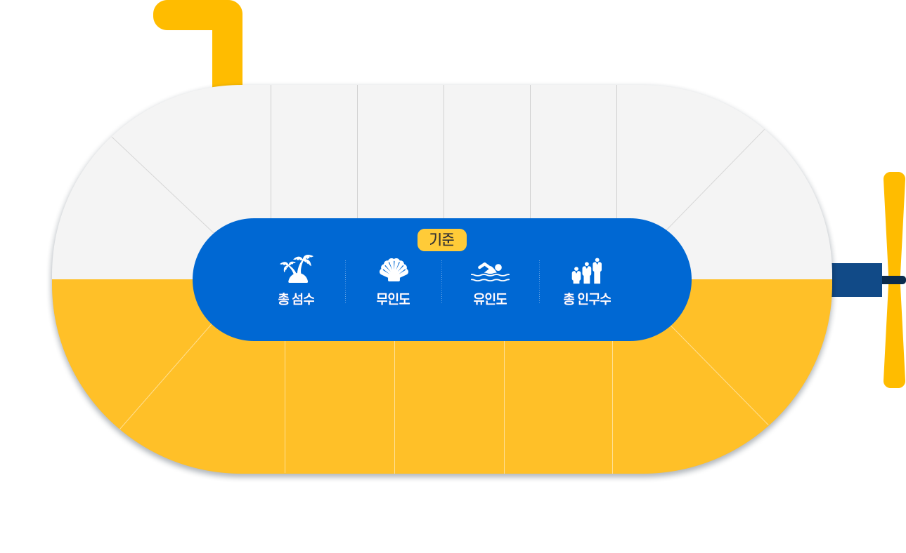
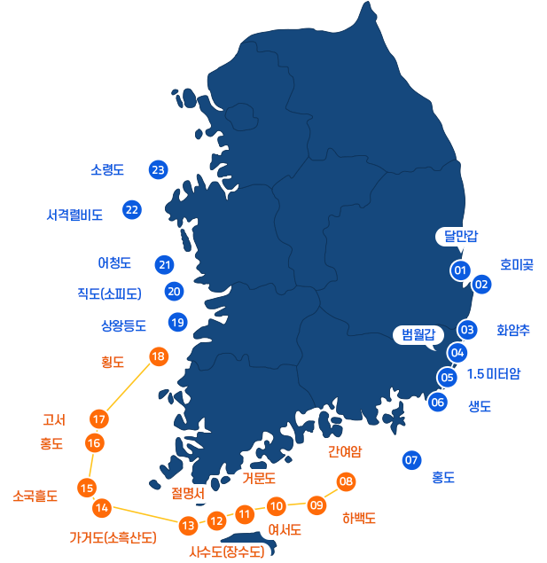

전남의 특별한 매력, 해양자원 현황
-
섬
2,165개
(전국의 64%) -
해안선

6,873km
(전국의 45%) -
갯벌
1,054km
(전국의 42%) -
바다면적
26,450㎢
(전국의 37%)
(2021 전라남도 해양수산 통계)
우리나라 섬은 총 몇 개일까요?
3,383개
(총 면적: 3,868㎢)
유인도
무인도 이외의 섬으로 사람이 거주하는 섬
464개(14%)
3,791㎢(98%)
무인도
바다로 둘러싸여 있고 만조시 해수면 위로 들어나는
자연적으로 형성된 땅으로 사람이 거주하지 않는 섬
2,919개(86%)
77㎢(2%)
줄어드는 유인도
-
1980's
987개
-
1990's
841개
-
2000's
686개
-
2010's
524개
-
2020's
464개
전국 시·도별 섬 현황
전남의 섬은 1,844개 ( 55% )
( 총 면적 1,896㎢, 전국의 49% )
유인도: 271개 ( 58% )
무인도 : 1,573개 (54%)
전국 시·도별 유인도 비율
- 전남
58% - 경남
17% - 인천
8% - 충남 7%
- 전북 5%
- 제주 2%
- 경기 1%
- 부산 1%
- 경북 1%
전국 시·도별 무인도 비율
- 전남
54% - 경남
15% - 충남
7% - 인천 4%
- 전북 2%
- 제주 2%
- 부산 1%
- 경기 1%
- 강원 1%
- 경북 0.4%
- 울산 0.1%
(행정안전부 전국 통계자료 기준 2021)
전국 유인도옆 물고기
전남 시·군별 섬 & 인구 현황
-
신안
- 857개
- 784개
- 73개
- 39,408명
-
진도
- 254개
- 210개
- 44개
- 31,227명
-
완도
- 258개
- 204개
- 54개
- 45,369명
-
영광
- 64개
- 54개
- 10개
- 594명
-
무안
- 28개
- 27개
- 1개
- 46명
-
영암
- 2개
- 2개
- 0개
- 0명
-
해남
- 60개
- 53개
- 7개
- 842명
-
강진
- 8개
- 7개
- 1개
- 50명
-
장흥
- 14개
- 12개
- 2개
- 160명
-
보성
- 21개
- 18개
- 3개
- 264명
-
고흥
- 230개
- 207개
- 23개
- 9,873명
-
광양
- 3개
- 1개
- 2개
- 14,265명
-
순천
- 2개
- 2개
- 0개
- 0명
-
여수
- 353개
- 308개
- 45개
- 22,594명
-
목포
- 11개
- 5개
- 6개
- 723명
(2021 전라남도 해양수산 통계)
버블
병어
갈치
해파리
잠수부
산호1
산호2
산호3
영해의 기점 현황
우리나라의 주권이 미치는 바다를 영해라고 하고, 이 영해는 기점이 되는 기선으로 부터 12해리 범위까지 설정되는데 영해의 확정 기준이 되는 점을 영해의 기점이라고 합니다.
우리나라에는 서해안과 남해안이 많은 섬들로 인해 해안선이 복잡하므로 가장 외각의 섬들을 이어서 직선기선을 설정하였으며, ‘영해 및 접속수역법 시행령’ 에 따라 직선기점 (영해기점) 23개를 지정하여 관리하고 있습니다.
- 직선기선
- 전남 직선기선